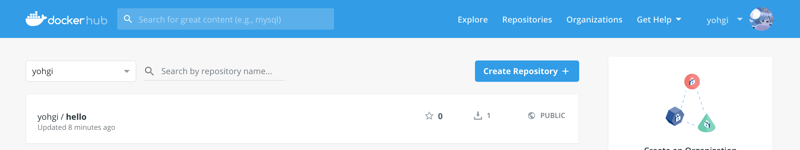

dockerfile
Docker Image¶
Docker Image が特定の環境のスナップショットということがわかりました。
次にDocker Image を自分で作成する方法を見ていきましょう。
このドキュメントについて
Docker Image を作るための方法は複数ありますが、このドキュメントは 「プロダクションへDockerを導入するための知識をハンズオン形式で最短経路で学ぶ」 ということを目標にしています。
そのため、現在デファクトスタンダードである Dockerfile のみ取り扱います。
興味がある方は調べてみると良いですが、Dockerfile以外は基本的に使用されません。
Dockerfile¶
Docker Image は Dockerfile というファイルを記述し、そのファイルを元にビルドすることでスナップショットの作成ができます。
試しに Dockerfile を記述してDocker Image を作成してみましょう。
Dockerfileを記述してみる¶
まずは echo hello! を実行するDocker Image を作ってみましょう。
1. 環境の用意¶
ディレクトリを作成してviで Dockerfile へテキスト入力の開始をします。
$ cd ~ $ mkdir -p docker/ubuntu $ cd docker/ubuntu $ echo "hello docker !" > hello.txt $ vi Dockerfile
2. Dockerfile の編集¶
Dockerfileは独自のDSLで記述します。
DSLは後ほど解説しますが、以下のDockerfileは「 ubuntu というDocker Imageをもとに、ホストの hello.txt をコンテナの /tmp/hello.txt へコピーして、 cat /tmp/hello.txt コマンドを実行」という意味になります。
FROM ubuntu COPY hello.txt /tmp/hello.txt CMD ["cat", "/tmp/hello.txt"]
3. Docker Image のビルド&実行¶
docker build コマンドで Dockerfile からDocker Image を作成します。
-t hello オプションは「Docker Imageを hello という名前にする」という意味です。
. はdocker build 実行時のコンテキストの指定です。 . は COPY コマンドを実行する際にどのディレクトリを起点とするかを指定します。
$ docker build -t hello .
Docker Image がビルドできたか確認してみましょう。
docker images で現在ローカルに存在するDocker Image の一覧を確認することができます。
$ docker images REPOSITORY TAG IMAGE ID CREATED SIZE hello latest 59e1a587fe86 13 seconds ago 88.9MB ubuntu latest 94e814e2efa8 6 days ago 88.9MB node latest 9ff38e3a6d9d 10 days ago 904MB
docker run image で実行してみましょう。
CMD で指定した cat /tmp/hello.txt が実行され、"hello docker !"と表示されるはずです。
$ docker run hello hello docker !
Docker Hub へアップロード¶
ローカルで開発したイメージをステージングや本番環境で動かすにはDockerレジストリにアップロードする必要があります。
DockerレジストリはDocker Image を保存するための場所で、Docker版のGitHubのようなものです。
Docker公式が提供しているDockerHubへ先ほど作成した hello イメージをアップロードしましょう。
クラウドの場合
AWSの場合"Elastic Container Registry"が、GCPの場合"Google Container Registry" というDockerレジストリサービスが存在します。
クラウド上に本番環境を構築する場合は構築するクラウドで提供されているDockerレジストリサービスを使うのが良いでしょう。
1. Docker Hubへログイン¶
docker login コマンドでDocker Hub へログインします。
まだDockerHubの登録が済んでいない場合は https://hub.docker.com/ にてアカウントの登録をしましょう。
$ docker login Login with your Docker ID to push and pull images from Docker Hub. If you don't have a Docker ID, head over to https://hub.docker.com to create one. Username: <YOUR USER NAME> Password: <YOUR PASSWORD> WARNING! Your password will be stored unencrypted in /root/.docker/config.json. Configure a credential helper to remove this warning. See https://docs.docker.com/engine/reference/commandline/login/#credentials-store Login Succeeded
2. Docker Image の命名¶
Docker Hub にアップロードするためにはDocker Hub のDocker Image の命名規則に則る必要があります。
ユーザーのオリジナルイメージは <USER NAME>/<IMAGE NAME>:<TAG> という命名にします。( :<TAG> は省略可能で、省略すると :latest と命名されます)
まずは docker tag コマンドで命名しましょう。 <USER NAME> は自分のユーザー名を入力してください。
$ docker tag hello <USER NAME>/hello
命名できたかの確認をしましょう。
$ docker images REPOSITORY TAG IMAGE ID CREATED SIZE hello latest 59e1a587fe86 19 minutes ago 88.9MB <USER NAME>/hello latest 59e1a587fe86 19 minutes ago 88.9MB ubuntu latest 94e814e2efa8 6 days ago 88.9MB
3. Docker Imageのアップロード¶
Docker Image のアップロードを行います。
$ docker push <USER NAME>/hello The push refers to repository [docker.io/<USER NAME>/hello] b57c79f4a9f3: Mounted from library/ubuntu d60e01b37e74: Mounted from library/ubuntu e45cfbc98a50: Mounted from library/ubuntu 762d8e1a6054: Mounted from library/ubuntu latest: digest: sha256:99aab145aaa0bf0e51a2ab995e0051b1756e1016cbc7d82bcee663c79f56b5c3 size: 1150
4. Docker Hub の確認¶

https://hub.docker.com/ へアクセスし、 <USER NAME>/hello がアップロードされているか確認しましょう。
5. Docker Hub にアップロードしたDocker Imageの実行¶
まずは現在存在するローカルのイメージを削除します。
同名のイメージが存在するとDockerHubから取得せず、ローカルに存在するイメージを参照してしまうからです。
実行中のコンテナを削除
$ docker container ls -a CONTAINER ID IMAGE COMMAND CREATED STATUS PORTS NAMES 429c028bcf74 ubuntu "echo hoge" 16 seconds ago Exited (0) 15 seconds ago stoic_greider $ docker container prune WARNING! This will remove all stopped containers. Are you sure you want to continue? [y/N] y Deleted
ローカルのImageを削除
$ docker image prune -a WARNING! This will remove all images without at least one container associated to them. Are you sure you want to continue? [y/N] y Deleted Images:
$ docker images REPOSITORY TAG IMAGE ID CREATED SIZE $
Docker Hub から作成したイメージの取得
$ docker pull <USER NAME>/hello Using default tag: latest latest: Pulling from <USER NAME>/hello 898c46f3b1a1: Pull complete 63366dfa0a50: Pull complete 041d4cd74a92: Pull complete 6e1bee0f8701: Pull complete Digest: sha256:99aab145aaa0bf0e51a2ab995e0051b1756e1016cbc7d82bcee663c79f56b5c3 Status: Downloaded newer image for <USER NAME>/hello:latest
Dockerイメージの実行
$ docker run <USER NAME>/hello hello docker !
DSL¶
コマンド¶
Dockerfileには17のコマンドが用意されています。
FROM , ENV , WORKDIR , RUN , ADD , ARGS , CMD , ONBUILD , LABEL , ENTRYPOINT ,
STOPSIGNAL , MAINTAINER , VOLUME , HEALTHCHECK , EXPOSE , USER , SHELL
MAINTAINERコマンド
MAINTAINER コマンドは非推奨です。
このコマンドが使用されているDockerfileは既に古くなっている可能性があるので注意しましょう。
基本的なコマンド¶
個人的に、Dockerfileを本番のワークロードで使用する場合以下の7つのコマンドを覚えるだけで十分だと考えています。
FROM , COPY , RUN , CMD , WORKDIR , ENV , USER
Node.jsを動かす際のサンプルを用意したので、サンプルのDockerfileをもとに見ていきましょう。
実際のコードは以下を参照してください。
introduction-docker/handson/dockerfile at master · y-ohgi/introduction-docker
FROM node ENV NODE_ENV=production WORKDIR /scripts COPY . . RUN npm install \ && groupadd app \ && useradd -g app -m app \ && mv /root/.config /home/app/ \ && chown -R app:app /scripts /home/app/.config USER app CMD ["npm", "start"]
FROM¶
ベースとなるDocker Image を指定します。
DockerはベースとなるDocker Image の上に COPY や RUN のようなコマンドを重ねてDocker Image を作成します。
ベースとなるDocker Image は公式で提供されているImageを使用するのが一般的です。
また、ここで設定したイメージを「ベースイメージ」と呼びます。
FROM node
ENV¶
Docker内で使用する環境変数を定義します。
NODE_ENV のようなDockerの起動時にデフォルトで定義されていてほしい環境変数を定義すると良いでしょう。
ENV NODE_ENV=production
WORKDIR¶
Dockerfileでコマンドを実行する際に基準となるディレクトリを設定します。
このとき存在しないディレクトリを指定すると自動的にディレクトリが作成されます。
デフォルトだと / が設定されているため、最悪の場合既存のディレクトリを上書きしてしまいコンテナが起動しなくなります。
WORKDIR /scripts
COPY¶
Docker内へホストのファイル/ディレクトリをコピーします。
COPY は基本的に2つの引数を設定します。1つ目はホスト側のディレクトリ、2つ目はDocker側のディレクトリです。
ホスト側のディレクトリは docker build . で指定したディレクトリです。この場合 . を指定しており、カレントディレクトリが参照されます。
Docker側は WORKDIR で定義されたディレクトリを参照します。
COPY . .
RUN¶
Docker内でコマンドを実行します。
ここでコンテナへ依存するライブラリやパッケージのインストールやユーザーの設定などの処理を実行します。
RUN npm install \ && groupadd app \ && useradd -g app app \ && chown -R app:app /scripts
USER¶
作成したDocker Image を起動時にログインするユーザーを指定します。
デフォルトは root が設定されているため、セキュリティリスクを回避するために別のユーザーを指定するのが良いでしょう。
USER app
CMD¶
Docker起動時にデフォルトで実行されるコマンドを定義します。
Dockerはここで設定したコマンドがフォアグラウンドで実行されている間が生存期間になります。
そのため、プロセスの処理が走っている間はフォアグラウンドで実行するように記述します(バックグラウンドで起動するとDockerが終了してしまう)。
CMD ["npm", "run", "start"]
よく使用されるコマンド¶
プロダクションで使用することは少ないと思いますが、その他の頻出するコマンドを紹介します。
覚えておくと他の人のDockerfileを読む際に役立つでしょう。
EXPOSE¶
コンテナ起動時に公開することを想定されているポートを記述します。
EXPOSE を記載することで他の人から「このDockerはポートをどの使用するのか」がわかりやすくなるため、記述すると丁寧でしょう。
EXPOSE 3000
コンテナ起動時に EXPOSE で指定されたポートをホスト側へ公開するには -P オプションを使用する必要があります。
$ docker run -P nginx
VOLUME¶
Data Volumeを作成するためのコマンドです。Volumeについては後の章で説明します。
永続的なデータや共有するためのデータ、更新頻度の激しいファイルを扱うために使用されます。
基本的に永続的なデータはDockerで管理することは推奨されないため、基本的にログのような更新頻度の激しいファイルで使用すると良いでしょう。
VOLUME ["/app/log"]
ARGS¶
Dockerfileのビルド時に変数を使用するためのコマンドです。
ビルドの前提条件/必要情報が増えると複雑化につながるため、基本的に使用しない方が良いです。
ARGS ${node_env:-production}
ENV node_env
$ docker build --build-arg node_env=development .
ADD¶
COPY コマンドを拡張したコマンドです。
主に以下の3つの機能を持ちます。
COPYと同じく指定したパスをコンテナ内へコピー- URLを指定した場合、そのURLからファイルをダウンロードし、コンテナ内へコピー
- コピーされたパスが
.tarもしくは.tar.gzの場合解凍する
ADD vs COPY
基本的に ADD を使うのは避け、 COPY を使うのが良いでしょう。
ADD は「指定したファイルのコピー」・「指定したURLの取得 」・「圧縮されたファイルの解凍」と非常に高機能な反面、Dockerfileが複雑度が増します。
また、URLからファイルを取得するのはパブリックへ依存が発生し、URLの参照先が変更された際にビルド不可なDockerfileができてしまいます。
COPY の場合機能がシンプルなのでシンプルなDockerfileの作成に繋がります。
ENTRYPOINT¶
指定されたコマンドを実行します。
CMDとは異なり、 docker run 時に指定したコマンドを ENTRYPOINT の引数として使用します。
ENTRYPOINT ["echo"]
引数に "hello" を渡すと echo "hello" が実行される
$ docker run <IMAGE NAME> "hello!" hello!
entrypoint は実行時のオプションで変更可能
$ docker run --entrypoint date <IMAGE NAME> Mon Mar 18 22:36:19 JST 2019
ENTRYPOINT vs CMD
基本的に CMD を使うのが良いでしょう。
ENTRYPOINT はDocker起動時のコマンドを強制します。
コマンドのラップをするDocker Image の場合は ENTRYPOINT のほうが好ましいですが、一般的なWebアプリケーションの場合は CMD を使用する方がユーザーにとって使いやすいDocker Image になります。
まとめ¶
- Dockerfileを記述してDocker Image を作成する
- Docker Image はDockerレジストリへアップロードすることで容易に保管/配布ができる
- Dockerfileは基本的に7個のコマンドの組み合わせで作成できる